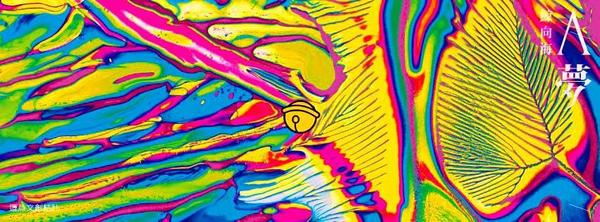

|  | 關於作者 | 相關網站 | 參考文獻 | 最新消息 | ||
| 色情 是這時代集體潛意識 | ||||||
|
||||||
每個詩人都是脆弱的大雄 |
||||||
| 前有《大雄》，今有《A夢》，究竟是太熱愛這套日本漫畫，或者純粹這兩個關鍵詞，藏有某種純真的狎邪？鯨向海還真說出一套他的「哆啦A夢詩學」：「詩就是A夢的百寶袋。每個詩人都是脆弱的大雄。」願使自己的詩集「多元成家」，彼此唱和，「像是一個歌詠隊」，有時藉由關鍵意象，有時透過卷首語的暗碼，有時則擴充前詩寫成相異版本，「詩的戰爭是意象或語言的奪取。把某些意象語言占為己有。使人不得不聯想到你，是一種樂趣。」可以說，「我就是選擇用『通緝犯』，『精神病院』，『大雄』，『犄角』，『A夢』這幾個意象來表達我對當代詩學的看法。」 | ||||||
|
||||||
儘管網路身分活躍，近年鯨向海漸漸消失於人前，「作者與讀者之間有互為心理治療師與病人的關係。我仍希望自己有第三隻眼騰空而起，成為他們的督導，冷眼旁觀。我希望自己不要太介入此事。」因此，過往序中雖可見讀者意識的存在，但「讀者是重要的，讀者也是不重要的，重要的是你自己必須永遠保持對詩的熱情。」 |
||||||
巧妙焊接每一天的詩意 |
||||||
| 前有《大雄》，今有《A夢》，究竟是太熱愛這套日本漫畫，或者純粹這兩個關鍵詞，藏有某種純真的狎邪？鯨向海還真說出一套他的「哆啦A夢詩學」：「詩就是A夢的百寶袋。每個詩人都是脆弱的大雄。」願使自己的詩集「多元成家」，彼此唱和，「像是一個歌詠隊」，有時藉由關鍵意象，有時透過卷首語的暗碼，有時則擴充前詩寫成相異版本，「詩的戰爭是意象或語言的奪取。把某些意象語言占為己有。使人不得不聯想到你，是一種樂趣。」可以說，「我就是選擇用『通緝犯』，『精神病院』，『大雄』，『犄角』，『A夢』這幾個意象來表達我對當代詩學的看法。」 | ||||||
|
||||||
| 「B哀」顯然收納了各色哀愁，畢竟它念起來就似閩南語「悲哀」。在此輯，「身懷利刃」和「寬恕自己」是並置的兩個聲部，目光一舉投至「夜色中的亡命之徒們」身上──其中特別感覺到書寫難度的，是〈最後的晚餐〉：黑色幽默，場景與音樂絕佳，對台灣社會的嘲諷毫不手軟，各種變奏隱微含蓄，氣氛飽滿，讀時忍不住想起布紐爾《自由的幻影》。「C遊」則更具遊戲感覺，比方第一首圖像詩〈顯微極遠十四行〉（雖然在〈與其他的孤獨交通〉和〈籠子〉裡也曾小露身手），比方〈那個〉和〈詩餘集句〉，分別以古典小說對白和詞嫁接為現代詩，「我覺得詩的藝術不在於表面地使語言變得繁複或簡單，而更深入地在簡單處繁複，在繁複處簡單。有時『遊戲』的氛圍會給人這種安全的，易懂的錯覺，以為很簡單，卻可以不自覺地進入繁複的世界。所以我會經常不避諱寫好玩的詩。」 | ||||||
「：D」較難定義。或許可從卷首關鍵字「和解」找尋蛛絲馬跡：這是和他人、他物、他事的種種關係互動。有屏棄修飾，直白、童語式的〈寫給母親〉，也有〈洶湧之泉〉的自我應答、療癒。在每本詩集都出現的「父親」，這一次也沒缺席，「『父親』確實是一個我很有情意結的主題。我應該將來還是忍不住會去寫。『父親』是寬闊的，那是威權的象徵，也是愛與恨的源頭。」 《A夢》僅是斷代，「巧妙地焊接每一天的詩意始終是我的心頭大喜。」不止於此，他還打算認真焊接既往和將來，讓一生，成為一本《鯨向海》。 |